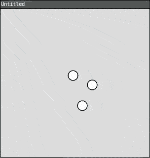
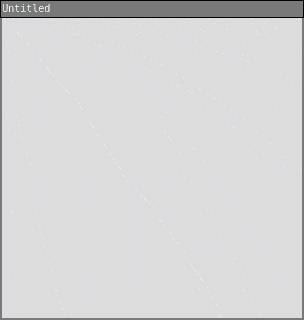
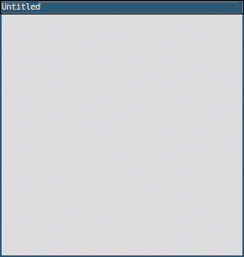
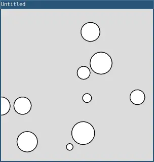
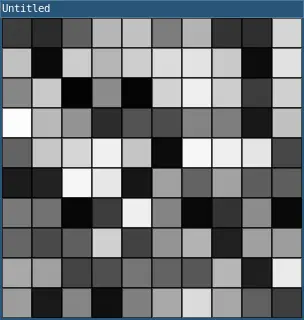
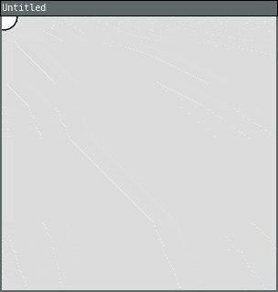

Week 4 - Arrays of things and Drawing Machines
Date: 2026-09-14
Today
- Autonomous painting machines
- Harold Cohen and AARON
- Samia Halaby
- Tables in Lua
- Intro to Tables in Lua
- Randomization, following, trails with tables
- Intro workshop: live coding music with Strudel
Harold Cohen and AARON
Harold Cohen - The Age of Intelligent Machines - 1987 (Clip)
Harold Cohen - Collaborations with my Other Self - 2011 (Interview)
Arrays (Ordered Tables)
You know how to use variables, create functions, use if statements, create animations, get user input, and use for loops. This tutorial introduces arrays (ordered tables in Lua), which let you store multiple values in a single variable!
The Problem
Let’s say you want to draw multiple circles that bounce around the screen. You might start with code like this:

require("L5")
circle1X = 100
circle1Y = 100
circle1SpeedX = 2
circle1SpeedY = 1
circle2X = 200
circle2Y = 150
circle2SpeedX = -1
circle2SpeedY = 2
circle3X = 150
circle3Y = 200
circle3SpeedX = 1
circle3SpeedY = -2
function setup()
size(300, 300)
end
function draw()
background(220)
-- Move and draw circle 1
circle1X = circle1X + circle1SpeedX
circle1Y = circle1Y + circle1SpeedY
if circle1X < 0 or circle1X > width then circle1SpeedX = circle1SpeedX * -1 end
if circle1Y < 0 or circle1Y > height then circle1SpeedY = circle1SpeedY * -1 end
circle(circle1X, circle1Y, 20)
-- Move and draw circle 2
circle2X = circle2X + circle2SpeedX
circle2Y = circle2Y + circle2SpeedY
if circle2X < 0 or circle2X > width then circle2SpeedX = circle2SpeedX * -1 end
if circle2Y < 0 or circle2Y > height then circle2SpeedY = circle2SpeedY * -1 end
circle(circle2X, circle2Y, 20)
-- Move and draw circle 3
circle3X = circle3X + circle3SpeedX
circle3Y = circle3Y + circle3SpeedY
if circle3X < 0 or circle3X > width then circle3SpeedX = circle3SpeedX * -1 end
if circle3Y < 0 or circle3Y > height then circle3SpeedY = circle3SpeedY * -1 end
circle(circle3X, circle3Y, 20)
endThis is very repetitive! And what if you wanted 10 circles? Or 100?
Arrays (Ordered Tables)
An array is an ordered table in Lua - a table that holds multiple values in a specific sequence.
To create an ordered table in Lua, use curly brackets
{}:
circleX = {100, 200, 150}This creates a table named circleX that
holds three values: 100, 200, and
150.
Accessing Array Elements
To access an element in a table, use square brackets
[] with an index:
print(circleX[1]) -- prints 100
print(circleX[2]) -- prints 200
print(circleX[3]) -- prints 150Important: In Lua, arrays start at index
1, not 0!
Arrays and Loops
Arrays become powerful when combined with for loops. Instead of writing repetitive code for each circle, you can use a loop:
require("L5")
circleX = {100, 200, 150}
circleY = {100, 150, 200}
circleSpeedX = {2, -1, 1}
circleSpeedY = {1, 2, -2}
function setup()
size(300, 300)
end
function draw()
background(220)
for i = 1, 3 do
-- Move circle
circleX[i] = circleX[i] + circleSpeedX[i]
circleY[i] = circleY[i] + circleSpeedY[i]
-- Bounce off edges
if circleX[i] < 0 or circleX[i] > width then
circleSpeedX[i] = circleSpeedX[i] * -1
end
if circleY[i] < 0 or circleY[i] > height then
circleSpeedY[i] = circleSpeedY[i] * -1
end
-- Draw circle
circle(circleX[i], circleY[i], 20)
end
endNow the code is much shorter and easier to work with!
The # Operator
Instead of hardcoding the number of elements, you can use
the # operator to get the length of a
table:
for i = 1, #circleX do
-- code here
endThis makes it easy to add or remove elements without changing your loop!
Adding Elements
You can add elements to a table using
table.insert(). This takes two arguments: the
name of the table, and the item you want to insert at the
end:
table.insert(tableName, value) -- adds to endOptionally, you can specify an index as the second argument to insert the new element at a specific position in the table:
table.insert(tableName, index, value) -- inserts at specific positionHere’s an example:

require("L5")
circleX = {}
circleY = {}
function setup()
size(300, 300)
background(220)
end
function draw()
-- Don't clear background - leave a trail
end
function mousePressed()
table.insert(circleX, mouseX)
table.insert(circleY, mouseY)
-- Draw all circles
for i = 1, #circleX do
circle(circleX[i], circleY[i], 30)
end
endThis program adds a circle wherever you click!
Removing Elements
You can remove elements using
table.remove(). This works similarly to
table.insert() - you pass it the table name,
and optionally an index:
table.remove(tableName) -- removes last element
table.remove(tableName, index) -- removes element at specific positionIf you don’t specify an index, it removes the last element. If you do specify an index, it removes the element at that position.
Here’s an example:

require("L5")
circleX = {}
circleY = {}
function setup()
size(300, 300)
end
function draw()
background(220)
-- Draw all circles
for i = 1, #circleX do
circle(circleX[i], circleY[i], 30)
end
end
function mousePressed()
-- Add circle at mouse position
table.insert(circleX, mouseX)
table.insert(circleY, mouseY)
end
function keyPressed()
-- Remove last circle when any key is pressed
if #circleX > 0 then
table.remove(circleX)
table.remove(circleY)
end
endClick to add circles, press any key to remove the last one!
Random Initialization
You can use loops to fill arrays with random values:

require("L5")
circleX = {}
circleY = {}
circleSize = {}
function setup()
size(300, 300)
-- Create 10 random circles
for i = 1, 10 do
circleX[i] = random(width)
circleY[i] = random(height)
circleSize[i] = random(10, 50)
end
end
function draw()
background(220)
-- Draw all circles
for i = 1, #circleX do
circle(circleX[i], circleY[i], circleSize[i])
end
endThis creates 10 circles at random positions with random sizes!
Nested Tables (2D Arrays)
You can create tables of tables (2D arrays) for grid-based data:

require("L5")
grid = {}
function setup()
size(300, 300)
-- Create a 10x10 grid
for row = 1, 10 do
grid[row] = {}
for col = 1, 10 do
grid[row][col] = random(255)
end
end
end
function draw()
for row = 1, 10 do
for col = 1, 10 do
fill(grid[row][col])
rect((col - 1) * 30, (row - 1) * 30, 30, 30)
end
end
endThis creates a grid of randomly colored squares!
Example: Snake Trail
Here’s a complete example that creates a trail that follows the mouse:

require("L5")
trailX = {}
trailY = {}
maxLength = 20
function setup()
size(300, 300)
end
function draw()
background(220)
-- Add current mouse position
table.insert(trailX, mouseX)
table.insert(trailY, mouseY)
-- Remove oldest position if trail is too long
if #trailX > maxLength then
table.remove(trailX, 1)
table.remove(trailY, 1)
end
-- Draw trail
for i = 1, #trailX do
size = (i / #trailX) * 30
circle(trailX[i], trailY[i], size)
end
endThis creates a trail that follows your mouse, with circles getting bigger toward the mouse.
Live coding music with Strudel
- Strudel is a port of another livecoding program, Tidal Cycles, for javascript. This allows it to run in the browser without needing to set anything up on your computer. Despite not having the typical layout one might expect from a digital audio workstation, Strudel can be used to make just about any genre of music with the right dedication.
Getting started with strudel: There are many different sounds loaded into strudel by default; listed below are the ones I find myself using most frequently, however we can introduce more sounds later.
DRUMS
- bd = bass drum
- sd = snare drum
- rim = rimshot
- hh = hihat
- oh = open hihat
- cp = clap
SYNTHS
- sin/sine (sine wave)
- tri/triangle (triangle wave)
- saw/sawtooth (sawtooth wave)
- sqr/square (square wave)
- supersaw
- white (white noise)
- piano
MISC
- jazz
- metal
- insect
- crow
Since we’re just getting started, we’re going to focus on the drum sounds only while introducing the syntax for making sound in Strudel:
- sound() (or s() as an abbreviation) allows you to play
different sounds
sound("bd rim bd cp")here is a sequence using some of the drums we learned before, feel free to paste this into Strudel to listen to it!
- Strudel relies on “cycles” for the timing of your sounds. To change the amount of cycles per minute, we can use setcpm(#)
- .bank() is a modifier we can use to change the soundbank
we are using
sound("bd rim bd cp").bank("akaimpc60")- Try adding tr707, tr808, or tr909 inside of .bank() to hear the difference
- Rests can be added using - or ~, subdivisions can be
made with [], and sounds can alternate between different
cycles using <>
s("[rim bd] [rim <bd oh>] bd bd bd ~").bank("tr707")
- To condense this, we can use ! to replace repeating
notes
-
s("[rim bd] [rim <bd oh>] bd!3 ~").bank("tr707") //bd!3 plays the bass drum 3 times - While they seem similar, ! and * have different use
cases
s("rim hh rim bd*2") //plays bd twice in the same section of the sequence, as if using a subsequences("rim hh rim bd!2") //acts as if bd was placed twice in the sequence- These differences are easier to notice when using higher values, so try changing 2 to something else if you’re still confused
- To initialize a line of code in strudel, write $: at the start of a line before writing in a sound. This allows you to have multiple lines that will run at the same time alongside each other.
- To stop playing a line, use an underscore at the start like this _$:
- You can also comment it out as you usually would with //
- Other modifiers often used when working with drums are .distort(), .speed(), .swing(), .crush(), and .fast(). Feel free to experiment with these, or read into them on the strudel documentation to learn about how they work 🐈
_$: s("[rim bd] [rim <bd oh>]").bank("tr707") //this line isnt playing
//$: s("~ sd").fast(2) //neither is this one
$: s("rim hh rim bd!5") //but this line is!Activity: make drum loop with dice! 4 dice will be handed out and we will make a loop with these restrictions determined by the results
- D4
- 1 = default sound bank
- 2 = tr707
- 3 = tr808
- 4 = tr909
- D6
- 1 = no bass drum
- 2 = no rimshot
- 3 = no hihat
- 4 = no clap
- 5 = no snare
- 6 = no open hihat
- D8 (optional)
- All numbers in the code (excluding cpm and soundbank) must sum to resulting number
- D10
setcpm(result*10+80/4)
- Have fun!
MAKING MELODIES - Using the note() function allows you to write melodies using different sounds, it’s useful for using synth sounds like the ones on the first page - Notes can be written out in an a-g scale like when using a piano roll tool in a different program, in the format of the note you want along with the octave
$: note("[e4 d4]!2 [a3 <c4 ~>]!2").s("tri")
$: note("<e3 d3 a2!2>!3").s("sine").swing(2)- You can also write a melody with different numbers if
it’s harder to think of notes in a scale from a-g
- `$: note(“57 58 65 58”).s(“saw”).lpf(800).trans(“<0!4 -1!4>”).fast(2).room(2)
- Try writing a melody for the drums you made before, and feel free to look here if you need more help
- More default synths can be found in the menu found in
the top right on strudel.cc
under the sounds tab

Lesson by Jaiden Kelly, licensed under
CC
BY-ND
4.0


Contains material adapted from Arrays (ordered tables) by L5lua, Arrays by Happy Coding, licensed under CC BY 4.0